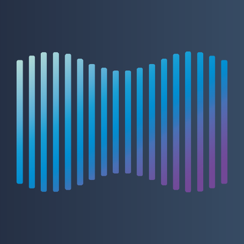

Wills Media Server
WillsMediaServer is an in development media server where users are able to host their existing media library and serve them to all of their existing devices through a simple web user interface
GitHub Page Project PageWillsMediaServer, A Flexible open-sourced media server
Table of contents
Features
- Doesnt care how media is stored
- can store any file format
- can serve to all of your devices
- Uses ffmpeg to transcode to smaller files for different devices
- Multiple users (Share with friends and family)
- Plugin system Undecided
-
Music
-
Automatic metadata gathering
- MusicBrainz API
- Using Acoustic identification
- Automatically generate playlists based on favourites
-
Automatic metadata gathering
- Films
- TV
- Many more to be added
Installation
Due to WMS being rewritten at the moment, installation may change at any time so take a look at the repository on github for more information about the rewrite and you should be able to figure out how to run it yourself. Sorry for any inconvenience caused!
© 2017-2019 RealStep Studios
Home Projects About Contact Blog